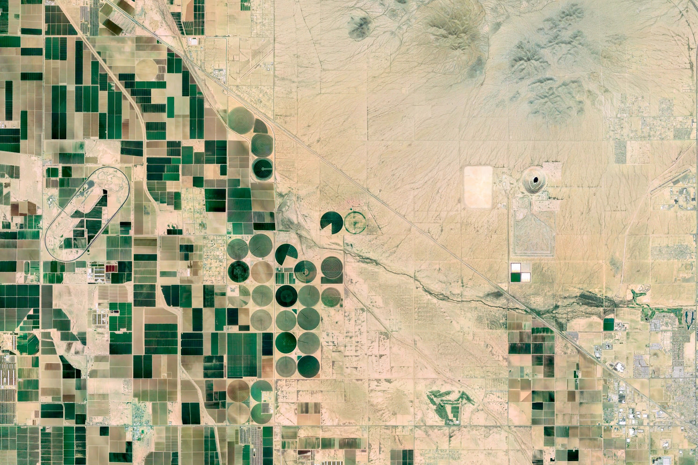
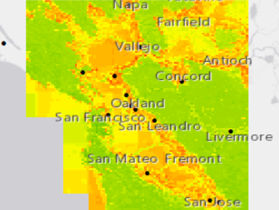
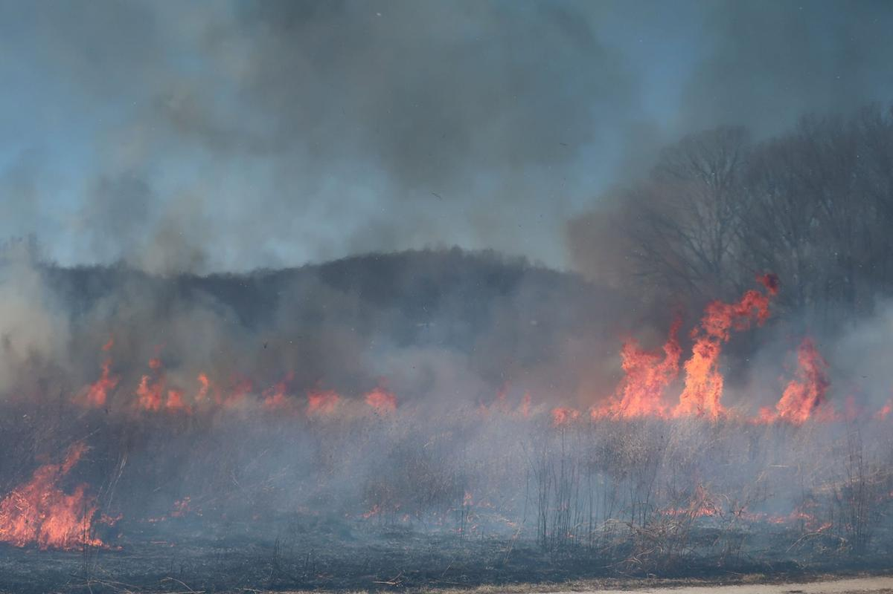
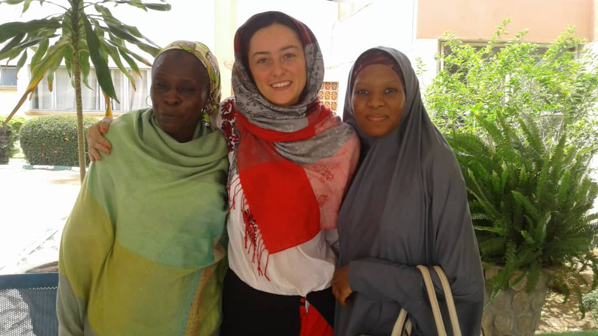

ABOUT ME
Environmental science, remote sensing, and machine learning.
I am a PhD student at the Bren School for Environmental Science and Management at UC Santa Barbara.
Ashley Larson and Kelly Caylor co-advise me, and my work is supported by the NSF GRFP and the Eugene Cota-Robles Fellowship.
I hold a BA in Statistics from UC Berkeley, and am the 2020 recipient of UC Berkeley's University Medal.
I am a statistician, remote sensor, and environmnetal scientist.
My primary interests lie in using data-driven approaches, especially remote sensing and machine learning, to understand earth systems that humans rely on for health and wellbeing.
I am most interested in food and water security.
However, my previous work spans West Nile virus risk mapping, public health effects of prescribed burns, fine particulate matter gridding, HIV in French Guiana, early marriage in Niger, and the effect of school closures on the COVID-19 epidemic.
MY WORK
Here are some of the projects I've been involved in.

Water burden of California Agriculture
California is one of the most productive agricultural regions in the world, but this intensity of agriculture has led to a chronic and unsustainable overuse of water resources. However, it is still unknown how much of irrigated water is actually used and evapotranspired. This project uses satellite based evapotranspiration data to compare water water lost to the atmosphere over agricultural lands versus surrounding natural lands. This allows us to better understand how much water we stand to conserve by avoiding agriculture and gain insights into which climates, crops, and irrigration practices are the most water intensive.
West Nile Virus Risk Maps
West Nile virus (WNV) is the most prevaluent mosquito-borne disease in California, and mitigation hinges on fine grained understanding of the risk landscape. We use high resolution land surface temperature measurements from ECOSTRESS in conjuction with mechanistic understandings of WNV risk to map mosquito biting rates and transmission rates at unprecedented spatial and temporal scales. The manuscript is published in Environmental Research Letters.

Continuous PM2.5 Grids
Fine particulate matter (PM2.5) is associated with many adverse health outcomes, and this is of particular concern in California due to the increase in high internisty wildfires.
Ground level particulate matter measurements are therefore important for public health monitoring and research, but high quality sensors are few and unevenly distributed across the landscape.
This project aims to create a 1km2 daily continuous grid of PM2.5 estimates in California using various publically available datasets.
Preliminary results were presented at AGU 2020. Here is the poster.
COVID-19 in Schools
In an effort to curb the COVID-19 epidemic, government officials have halted the functioning of many institutions, including schools.
However, many questions remain unanswered regarding the effectiveness of this intervention, and if and when to reopen schools.
This project, conducted by the Remais Group at UC Berkeley, uses an agent based SEIR model to assess the effect of school closures on the COVID-19 epidemic in the Bay Area.
Results can be seen here.

Health Effects of Prescribed Burns
As the frequency and intensity of catastrophic wildfires increases in California, there is an increased insentive to conduct extensive prescribed burning.
However, there are many unanswered questions surrounding the potential negative health effects from the smoke from these prescribed burns.
Conducted with the Potts Group at UC Berkeley, this project aims to gain a better understanding of the emissions and health effects of prescribed fires, especially in comparison to wildfires.
A poster on this topic can be found here.
Early Marriage in West Africa
Early marriage continues to be common practice among rural Hausa communities in Niger and Nigeria, despite the known detrimental public health and economic impacts.
Sponsored by the Center for Girls' Education, this projects aims to gain a deeper understanding of the cultural and social processes that underlie early marriage, as well as uncover opportunities for agency by the girls in the marriage process.
The manuscript for this project is in review.

HIV in French Guiana
According to the World Health Organization, French Guiana is the site of a generalized HIV epidemic.
On the border of French Guiana and Brazil, the prevalence and severity of HIV cases is significantly more severe.
In partnership with IDsante, a local NGO, this project aims to characterize the epidemic on the border and investigate the contibuting social, economic, and political factors.
Read more about this research here,
here,
and here.